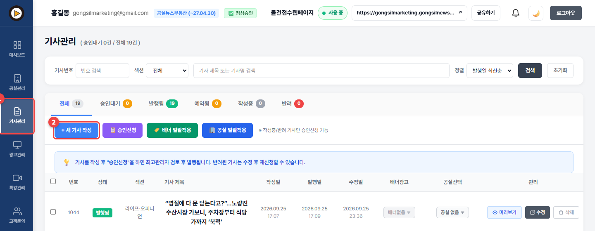
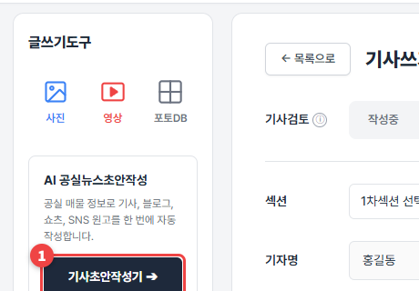
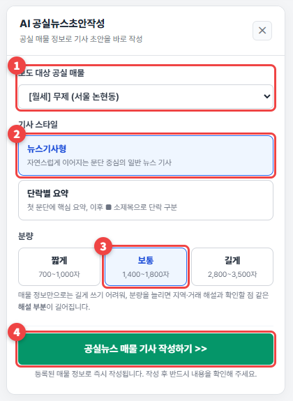
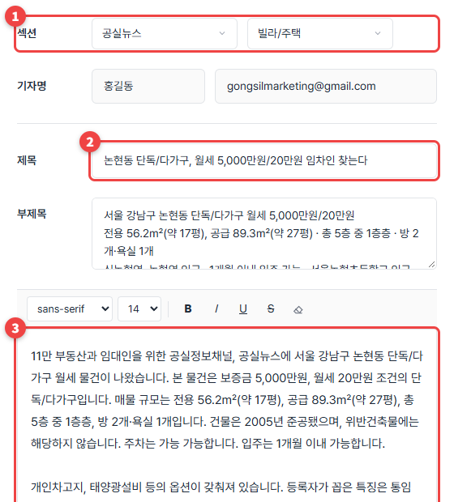
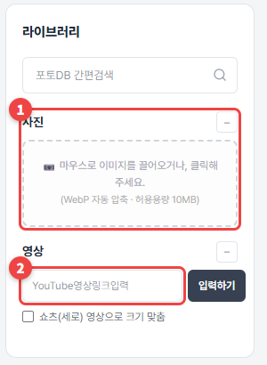
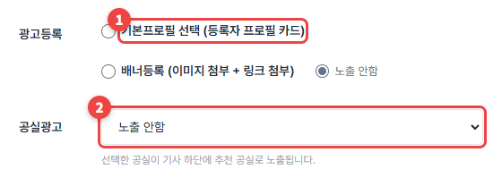
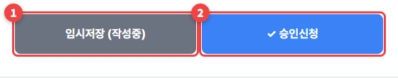

첫 기사 쓰기
등록한 공실로 AI가 기사 초안을 써 줍니다. 읽고 다듬어서 승인신청하면 공실뉴스에 발행됩니다.
기사관리로 가기 →
🔒 공실뉴스부동산·공실스터디부동산
1
왼쪽 ① 기사관리를 누르고 ② + 새 기사 작성을 누르세요.

2
왼쪽 글쓰기도구에서 기사초안작성기 ➔를 누르세요.

3
① 기사로 쓸 공실을 고르고 ② 기사 스타일 ③ 분량을 고른 뒤 ④ 공실뉴스 매물 기사 작성하기 >>를 누르세요. "AI가 기사 초안을 작성 중입니다"가 잠깐 보인 뒤 채워집니다.

4
① 섹션 ② 제목 ③ 본문이 자동으로 채워집니다. 꼭 읽어 보고 실제 매물과 다른 곳을 고치세요.

5
오른쪽 라이브러리에서 ① 사진을 끌어다 놓거나 ② 유튜브 영상 링크를 넣으세요. 사진은 10MB까지, 자동으로 압축됩니다.

6
기사 아래에 ① 내 프로필 카드나 배너를 붙이고 ② 내 공실 하나를 추천 공실로 붙일 수 있습니다.

7
② ✓ 승인신청을 누르세요. 다 못 썼으면 ① 임시저장 (작성중)을 누르세요.

💡 알아두세요
- 승인신청한 기사는 관리자 검토 후 발행됨이 됩니다. 반려되면 사유가 알림(🔔)으로 오고, 고쳐서 다시 신청할 수 있습니다.
- 발행된 기사의 본문 수정은 3번까지입니다. 배너·공실 연결 변경은 횟수에 들어가지 않습니다.
- 한 달에 쓸 수 있는 기사 수는 등급마다 다릅니다. 내 한도는 정보설정 → 기본정보에서 확인하세요.
"기사 작성 권한이 없습니다"가 떠요.
기사 작성은 공실뉴스부동산·공실스터디부동산 등급에서 열립니다. 공실스터디 신청하기에서 확인하세요.